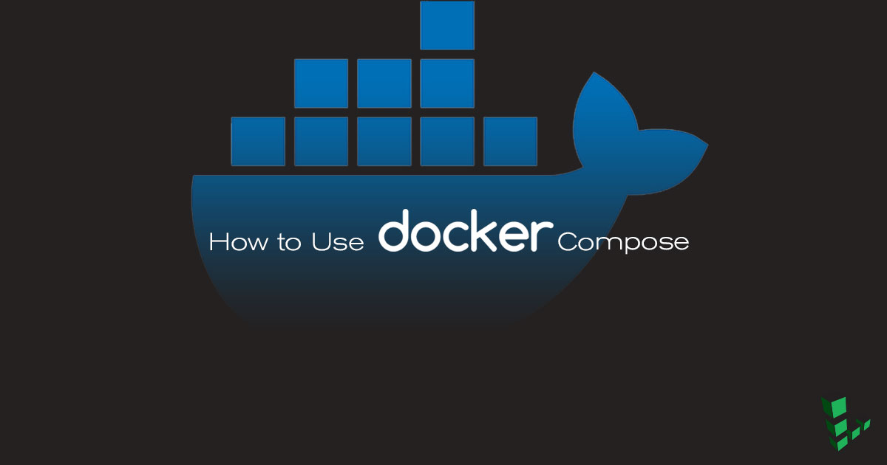

How to Use Docker Compose
Updated by Linode Written by Linode

What is Docker Compose?
If your Docker application includes more than one container (for example, a webserver and database running in separate containers), building, running, and connecting the containers from separate Dockerfiles is cumbersome and time-consuming. Docker Compose solves this problem by allowing you to use a YAML file to define multi-container apps. You can configure as many containers as you want, how they should be built and connected, and where data should be stored. When the YAML file is complete, you can run a single command to build, run, and configure all of the containers.
This guide will explain how the docker-compose.yml file is organized, and show how to use it to create several basic app configurations.
NoteGenerally the containers in an application built using Docker Compose will all run on the same host. Managing containers running on different hosts usually requires an additional tool, such as Docker Swarm or Kubernetes.
Before You Begin
Install Docker CE
You will need a Linode with Docker CE installed to follow along with the steps in this guide.
These steps install Docker Community Edition (CE) using the official Ubuntu repositories. To install on another distribution, see the official installation page.
Remove any older installations of Docker that may be on your system:
sudo apt remove docker docker-engine docker.ioMake sure you have the necessary packages to allow the use of Docker’s repository:
sudo apt install apt-transport-https ca-certificates curl software-properties-commonAdd Docker’s GPG key:
curl -fsSL https://download.docker.com/linux/ubuntu/gpg | sudo apt-key add -Verify the fingerprint of the GPG key:
sudo apt-key fingerprint 0EBFCD88You should see output similar to the following:
pub 4096R/0EBFCD88 2017-02-22 Key fingerprint = 9DC8 5822 9FC7 DD38 854A E2D8 8D81 803C 0EBF CD88 uid Docker Release (CE deb)Add the
stableDocker repository:sudo add-apt-repository "deb [arch=amd64] https://download.docker.com/linux/ubuntu $(lsb_release -cs) stable"Update your package index and install Docker CE:
sudo apt update sudo apt install docker-ceAdd your limited Linux user account to the
dockergroup:sudo usermod -aG docker $USERNote
After entering theusermodcommand, you will need to close your SSH session and open a new one for this change to take effect.Check that the installation was successful by running the built-in “Hello World” program:
docker run hello-world
Install Docker Compose
Download the latest version of Docker Compose. Check the releases page and replace
1.21.2in the command below with the version tagged as Latest release:sudo curl -L https://github.com/docker/compose/releases/download/1.21.2/docker-compose-`uname -s`-`uname -m` -o /usr/local/bin/docker-composeSet file permissions:
sudo chmod +x /usr/local/bin/docker-compose
Basic Usage
This section will review an example Docker Compose file taken from the Docker official documentation.
Open
docker-compose.ymlin a text editor and add the following content:- docker-compose.yml
-
1 2 3 4 5 6 7 8 9 10 11 12 13 14 15 16 17 18 19 20 21 22 23 24 25 26 27version: '3' services: db: image: mysql:5.7 volumes: - db_data:/var/lib/mysql restart: always environment: MYSQL_ROOT_PASSWORD: somewordpress MYSQL_DATABASE: wordpress MYSQL_USER: wordpress MYSQL_PASSWORD: wordpress wordpress: depends_on: - db image: wordpress:latest ports: - "8000:80" restart: always environment: WORDPRESS_DB_HOST: db:3306 WORDPRESS_DB_USER: wordpress WORDPRESS_DB_PASSWORD: wordpress volumes: db_data:
Save the file and run Docker Compose from the same directory:
docker-compose up -dThis will build and run the
dbandwordpresscontainers. Just as when running a single container withdocker run, the-dflag starts the containers in detached mode.You now have a WordPress container and MySQL container running on your host. Navigate to
192.0.8.1:8000/wordpressin a web browser to see your newly installed WordPress application. You can also usedocker psto further explore the resulting configuration:docker psStop and remove the containers:
docker-compose down
Compose File Syntax
A docker-compose.yml file is organized into four sections:
| Directive | Use |
|---|---|
| version | Specifies the Compose file syntax version. This guide will use Version 3 throughout. |
| services | In Docker a service is the name for a “Container in production”. This section defines the containers that will be started as a part of the Docker Compose instance. |
| networks | This section is used to configure networking for your application. You can change the settings of the default network, connect to an external network, or define app-specific networks. |
| volumes | Mounts a linked path on the host machine that can be used by the container. |
Most of this guide will focus on setting up containers using the services section. Here are some of the common directives used to set up and configure containers:
| Directive | Use |
|---|---|
| image | Sets the image that will be used to build the container. Using this directive assumes that the specified image already exists either on the host or on Docker Hub. |
| build | This directive can be used instead of image. Specifies the location of the Dockerfile that will be used to build this container. |
| db | In the case of the example Dockercompose file, db is a variable for the container you are about to define. |
| restart | Tells the container to restart if the system restarts. |
| volumes | Mounts a linked path on the host machine that can be used by the container |
| environment | Define environment variables to be passed in to the Docker run command. |
| depends_on | Sets a service as a dependency for the current block-defined container |
| port | Maps a port from the container to the host in the following manner: host:container |
| links | Link this service to any other services in the Docker Compose file by specifying their names here. |
Many other configuration directives are available. See the Compose File reference for details.
CautionThe exampledocker-compose.ymlabove uses theenvironmentdirective to store MySQL user passwords directly in the YAML file to be imported into the container as environment variables. This is not recommended for sensitive information in production environments. Instead, sensitive information can be stored in a separate.envfile (which is not checked into version control or made public) and accessed from withindocker-compose.ymlby using theenv_filedirective.
Build an Application from Scratch
Create a docker-compose.yml file one section at a time to illustrate the steps of building a multi-container application.
Define a Simple Service:
Create a new
docker-compose.ymlin a text editor and add the following content:- docker-compose.yml
-
1 2 3 4 5 6 7 8version: '3' services: distro: image: alpine restart: always container_name: Alpine_Distro entrypoint: tail -f /dev/null
Each entry in the
servicessection will create a separate container whendocker-composeis run. At this point, the section contains a single container based on the official Alpine distribution:- The
restartdirective is used to indicate that the container should always restart (after a crash or system reboot, for example). - The
container_namedirective is used to override the randomly generated container name and replace it with a name that is easier to remember and work with. - Docker containers exit by default if no process is running on them.
tail -fis an ongoing process, so it will run indefinitely and prevent the container from stopping. The defaultentrypointis overridden to keep the container running.
Bring up your container:
docker-compose up -dCheck the status of your container:
docker psThe output should resemble the following:
CONTAINER ID IMAGE COMMAND CREATED STATUS PORTS NAMES 967013c36a27 alpine "tail -f /dev/null" 3 seconds ago Up 2 seconds Alpine_DistroBring down the container:
docker-compose down
Add Additional Services
From here you can begin to build an ecosystem of containers. You can define how they work together and communicate.
Reopen
docker-compos.ymland add thedatabaseservice below:- docker-compose.yml
-
1 2 3 4 5 6 7 8 9 10 11 12 13 14 15 16version: '3' services: distro: image: alpine container_name: Alpine_Distro restart: always entrypoint: tail -f /dev/null database: image: postgres:latest container_name: postgres_db volumes: - ../dumps:/tmp/ ports: - "5432:5432"
There are now two services defined:
- Distro
- Database
The Distro service is the same as before. The Database server contains the instructions for a postgres container, and the directives:
volumes: - ../dumps:/tmpandports:-"5432:5432", the first directive maps the containerd/dumpsfolder to our local/tmpfolder. The second directive maps the containers ports to the local host’s ports.Check the running containers:
docker psThis command shows the status of the containers, the port mapping, the names, and the last command running on them. It’s important to note that the postgres container reads “docker-entrypoint…” under commands. The Postgres Docker Entrypoint script is the last thing that launches when the container starts.
CONTAINER ID IMAGE COMMAND CREATED STATUS PORTS NAMES ecc37246f6ef postgres:latest "docker-entrypoint..." About a minute ago Up About a minute 0.0.0.0:5432->5432/tcp postgres_db 35dab3e712d6 alpine "tail -f /dev/null" About a minute ago Up About a minute Alpine_DistroBring down both containers:
docker-compose down
Add an nginx Service
Add an nginx container so that your application will be able to serve websites:
- docker-compose.yml
-
1 2 3 4 5 6 7 8 9 10 11 12 13 14 15 16 17 18 19 20 21 22 23 24 25 26 27 28 29version: '3' services: distro: image: alpine container_name: Alpine_Distro restart: always entrypoint: tail -f /dev/null database: image: postgres:latest container_name: postgres_db volumes: - ../dumps:/tmp/ ports: - "5432:5432" web: image: nginx:latest container_name: nginx volumes: - ./mysite.template:/etc/nginx/conf.d/mysite.template ports: - "8080:80" environment: - NGINX_HOST=example.com - NGINX_port=80 links: - database:db - distro
This
docker-composefile contains some new directives: environment and links. The first directive sets runtime level options within the container.linkscreates a dependency network between the containers. The nginx container depends on the other two to execute. In addition, the corresponding containers will be reachable at a hostname indicated by the alias. In this case, pingingdbfrom thewebcontainer will reach thedatabaseservice. While you do not need thelinksdirective for the containers to talk with each other,linkscan serve as a failsafe when starting the docker-compose application.Start Docker Compose and check the container status:
docker-compose up -d docker psThe output should be similar to:
CONTAINER ID IMAGE COMMAND CREATED STATUS PORTS NAMES 55d573674e49 nginx:latest "nginx -g 'daemon ..." 3 minutes ago Up 3 minutes 0.0.0.0:8080->80/tcp nginx ad9e48b2b82a alpine "tail -f /dev/null" 3 minutes ago Up 3 minutes Alpine_Distro 736cf2f2239e postgres:latest "docker-entrypoint..." 3 minutes ago Up 3 minutes 0.0.0.0:5432->5432/tcp postgres_dbTest nginx by navigating to your Linode’s public IP address, port
8080in a browser (for example192.0.2.0:8080). You should see the default nginx landing page displayed.
Persistent Data Storage
Storing PostgreSQL data directly inside a container is not recommended. Docker containers are intended to be treated as ephemeral: your application’s containers are built from scratch when running docker-compose up and destroyed when running docker-compose down. In addition, any unexpected crash or restart on your system will cause any data stored in a container to be lost.
For these reasons it is important to set up a persistent volume on the host that the database containers will use to store their data.
Add a
volumessection todocker-compose.ymland edit thedatabaseservice to refer to the volume:- docker-compose.yml
-
1 2 3 4 5 6 7 8 9 10 11 12 13 14 15 16 17 18 19 20 21 22 23 24 25 26 27 28 29 30 31 32version: '3' services: distro: image: alpine container_name: Alpine_Distro restart: always entrypoint: tail -f /dev/null database: image: postgres:latest container_name: postgres_db volumes: - data:/var/lib/postgresql ports: - "5432:5432" web: image: nginx:latest container_name: nginx volumes: - ./mysite.template:/etc/nginx/conf.d/mysite.template ports: - "8080:80" environment: - NGINX_HOST=example.com - NGINX_port=80 links: - database:db - distro volumes: data: external: true
external: truetells Docker Compose to use a pre-existing external data volume. If no volume nameddatais present, starting the application will cause an error. Create the volume:docker volume create --name=dataStart the application as before:
docker-compose up -d
Next Steps
Docker Compose is a powerful tool for orchestrating sets of containers that can work together. Things like an app or a development environment can utilize Docker-compose. The result is a modular and configurable environment that can be deployed anywhere.
Join our Community
Find answers, ask questions, and help others.
This guide is published under a CC BY-ND 4.0 license.